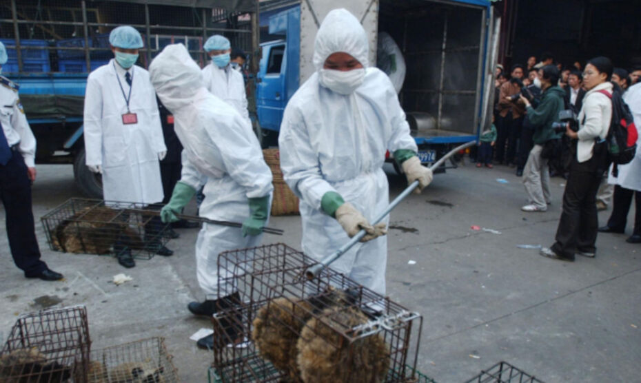

ВОЗ назвала торговлю животными в Китае возможной причиной возникновения COVID-19
Категории: Наука
© globallookpress.com
Эксперты Всемирной организации здравоохранения считают, что происхождение коронавируса может быть связано с торговлей животными в Китае.Об этом сообщает ТАСС со ссылкой на агентство Bloomberg.
Агентство пишет, что в ближайшее время должен быть опубликован доклад, над которым работали эксперты ВОЗ, ранее побывавшие в Ухане.Однако по данным агентства, выводы ученых будут не окончательными.
Ожидается, что в докладе озвучат версию, согласно которой COVID-19 по происхождению может быть похож на вирус, вызывающий тяжелый острый респираторный синдром (ТОРС).Сначала его носителями были летучие мыши, а к людям он попал через небольших млекопитающих – гималайских цивет, говорится в материале.
Одним из экспертов ВОЗ, посетившим Китай, был британский зоолог Питер Дасзак.Он сообщил, что на рынке в Ухане продавали животных, которые могли заразиться новым коронавирусом от летучих мышей и передать его человеку.
«Ключевой вывод состоит в том, что тот же путь, каким возник ТОРС, существовал и для нового коронавируса», – объяснил Дасзак.
Микробиолог Доминик Дуайер из Австралии предполагает, что новый коронавирус мог начать распространяться от зараженного животного, находившегося в Ухане.
Эксперты ВОЗ были направлены в Ухань, чтобы выяснить причины происхождения коронавируса нового типа 14 января.В итоге эксперты посетили уханьский рынок морепродуктов «Хуанань», где была зафиксирована первая вспышка коронавируса в декабре 2019 года.Также они побывали в инфекционных больницах города и в Уханьском институте вирусологии.
На итоговой пресс-конференции, которая состоялась 9 февраля, представители международной группы ученых сообщили, что им не удалось добиться серьезного прорыва, однако благодаря совместной работе с китайскими коллегами они смогли выдвинуть основные гипотезы происхождения коронавируса.
Posted On: 2021-03-27T16:24:00

Content Date: 2021-03-27
Download Date: 2021-05-30
Document ID: L0C04CMQ0